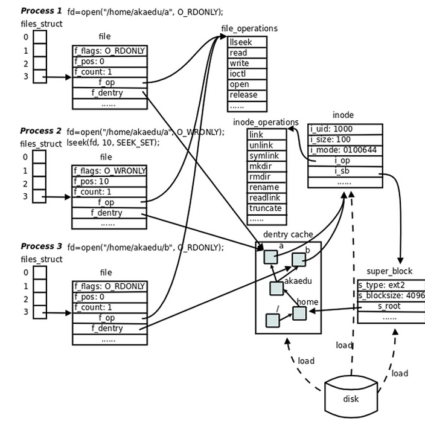

ELF格式

elf格式
Elf64_Ehdr文件头
man elf 查看ELF header (Ehdr)，The ELF header is described by the type Elf32_Ehdr or Elf64_Ehdr :
#define EI_NIDENT 16
typedef struct {
unsigned char e_ident[EI_NIDENT];
uint16_t e_type;
uint16_t e_machine;
uint32_t e_version;
ElfN_Addr e_entry;
ElfN_Off e_phoff;
ElfN_Off e_shoff;
uint32_t e_flags;
uint16_t e_ehsize;
uint16_t e_phentsize;
uint16_t e_phnum;
uint16_t e_shentsize;
uint16_t e_shnum;
uint16_t e_shstrndx;
} ElfN_Ehdr;
$ readelf -h vuln
ELF Header:
Magic: 7f 45 4c 46 02 01 01 00 00 00 00 00 00 00 00 00
Class: ELF64
Data: 2's complement, little endian
Version: 1 (current)
OS/ABI: UNIX - System V
ABI Version: 0
Type: DYN (Position-Independent Executable file)
Machine: Advanced Micro Devices X86-64
Version: 0x1
Entry point address: 0x11a0
Start of program headers: 64 (bytes into file)
Start of section headers: 15344 (bytes into file)
Flags: 0x0
Size of this header: 64 (bytes)
Size of program headers: 56 (bytes)
Number of program headers: 13
Size of section headers: 64 (bytes)
Number of section headers: 31
Section header string table index: 30
每种可执行文件的格式的开头几个字节都是很特殊的，特别是开头4个字节，通常被称为魔数（Magic Number）。通过对魔数的判断可以确定文件的格式和类型。如：ELF的可执行文件格式的头4个字节为0x7F、e、l、f；Java的可执行文件格式的头4个字节为c、a、f、e；如果被执行的是Shell脚本或perl、python等解释型语言的脚本，那么它的第一行往往是#!/bin/sh或#!/usr/bin/perl或#!/usr/bin/python，此时前两个字节#和!就构成了魔数，系统一旦判断到这两个字节，就对后面的字符串进行解析，以确定具体的解释程序路径。
elf文件类型
ElfN_Ehdr.e_type
-
ET_NONE: 未知类型，文件类型未知或者没有定义。
-
ET_REL: relocatable file，可重定位文件
-
ET_EXEC: exectuable file，可执行文件
-
ET_DYN: shared object，共享库
-
ET_CORE: core file，进程崩溃或接受到sigsegv信号后，保存的进程image内容，便于gdb进行调试分析
program headers
Elf64_Shdr节头表
ELF 节头表是一个节头数组。每一个节头都描述了其所对应的节的信息，如节名、节大小、在文件中的偏移、读写权限等。编译器、链接器、装载器都是通过节头表来定位和访问各个节的属性的。
section header定义： The section header has the following structure:
typedef struct {
/*
节名是一个字符串，保存在一个名为.shstrtab的字符串表（可通过Section Header索引到）。sh_name的值实际上是其节名字符串在.shstrtab中的偏移值
*/
uint32_t sh_name;
//节类型
uint32_t sh_type;
//节标志位
uint64_t sh_flags;
/*
节的虚拟地址，如果该节可以被加载，则sh_addr为该节被加载后在进程地址空间中的虚拟地址；否则sh_addr为0
*/
Elf64_Addr sh_addr;
/*
节偏移
如果该节存在于文件中，则表示该节在文件中的偏移；否则无意义，如sh_offset对于BSS 节来说是没有意义的
*/
Elf64_Off sh_offset;
//节大小
uint64_t sh_size;
//节链接信息
uint32_t sh_link;
uint32_t sh_info;
//节地址对齐方式
uint64_t sh_addralign;
/*
节项大小
有些节包含了一些固定大小的项，如符号表，其包含的每个符号所在的大小都一样的，对于这种节，sh_entsize表示每个项的大小。如果为0，则表示该节不包含固定大小的项。
*/
uint64_t sh_entsize;
} Elf64_Shdr;
用readelf -S 读取节头表
└─$ readelf -S /usr/bin/ls
There are 30 section headers, starting at offset 0x23768:
Section Headers:
[Nr] Name Type Address Offset
Size EntSize Flags Link Info Align
[ 0] NULL 0000000000000000 00000000
0000000000000000 0000000000000000 0 0 0
[ 1] .interp PROGBITS 00000000000002a8 000002a8
000000000000001c 0000000000000000 A 0 0 1
[ 2] .note.gnu.bu[...] NOTE 00000000000002c4 000002c4
0000000000000024 0000000000000000 A 0 0 4
[ 3] .note.ABI-tag NOTE 00000000000002e8 000002e8
0000000000000020 0000000000000000 A 0 0 4
[ 4] .gnu.hash GNU_HASH 0000000000000308 00000308
00000000000000ac 0000000000000000 A 5 0 8
[ 5] .dynsym DYNSYM 00000000000003b8 000003b8
0000000000000c00 0000000000000018 A 6 1 8
[ 6] .dynstr STRTAB 0000000000000fb8 00000fb8
00000000000005c5 0000000000000000 A 0 0 1
[ 7] .gnu.version VERSYM 000000000000157e 0000157e
0000000000000100 0000000000000002 A 5 0 2
[ 8] .gnu.version_r VERNEED 0000000000001680 00001680
00000000000000a0 0000000000000000 A 6 2 8
[ 9] .rela.dyn RELA 0000000000001720 00001720
0000000000001440 0000000000000018 A 5 0 8
[10] .rela.plt RELA 0000000000002b60 00002b60
00000000000009d8 0000000000000018 AI 5 24 8
[11] .init PROGBITS 0000000000004000 00004000
0000000000000017 0000000000000000 AX 0 0 4
[12] .plt PROGBITS 0000000000004020 00004020
00000000000006a0 0000000000000010 AX 0 0 16
[13] .plt.got PROGBITS 00000000000046c0 000046c0
0000000000000018 0000000000000008 AX 0 0 8
[14] .text PROGBITS 00000000000046e0 000046e0
0000000000013cde 0000000000000000 AX 0 0 16
[15] .fini PROGBITS 00000000000183c0 000183c0
0000000000000009 0000000000000000 AX 0 0 4
[16] .rodata PROGBITS 0000000000019000 00019000
0000000000004f09 0000000000000000 A 0 0 32
[17] .eh_frame_hdr PROGBITS 000000000001df0c 0001df0c
0000000000000944 0000000000000000 A 0 0 4
[18] .eh_frame PROGBITS 000000000001e850 0001e850
0000000000003268 0000000000000000 A 0 0 8
[19] .init_array INIT_ARRAY 0000000000023350 00022350
0000000000000008 0000000000000008 WA 0 0 8
[20] .fini_array FINI_ARRAY 0000000000023358 00022358
0000000000000008 0000000000000008 WA 0 0 8
[21] .data.rel.ro PROGBITS 0000000000023360 00022360
0000000000000a78 0000000000000000 WA 0 0 32
[22] .dynamic DYNAMIC 0000000000023dd8 00022dd8
00000000000001f0 0000000000000010 WA 6 0 8
[23] .got PROGBITS 0000000000023fc8 00022fc8
0000000000000038 0000000000000008 WA 0 0 8
[24] .got.plt PROGBITS 0000000000024000 00023000
0000000000000360 0000000000000008 WA 0 0 8
[25] .data PROGBITS 0000000000024360 00023360
0000000000000268 0000000000000000 WA 0 0 32
[26] .bss NOBITS 00000000000245e0 000235c8
00000000000012d8 0000000000000000 WA 0 0 32
[27] .gnu_debugaltlink PROGBITS 0000000000000000 000235c8
0000000000000049 0000000000000000 0 0 1
[28] .gnu_debuglink PROGBITS 0000000000000000 00023614
0000000000000034 0000000000000000 0 0 4
[29] .shstrtab STRTAB 0000000000000000 00023648
000000000000011c 0000000000000000 0 0 1
Key to Flags:
W (write), A (alloc), X (execute), M (merge), S (strings), I (info),
L (link order), O (extra OS processing required), G (group), T (TLS),
C (compressed), x (unknown), o (OS specific), E (exclude),
D (mbind), l (large), p (processor specific)
节类型(sh_type)
节名是一个字符串，只是在链接和编译过程中有意义，但它并不能真正地表示节的类型。对于编译器和链接器来说，主要决定节的属性是节的类型（sh_type）和节的标志位（sh_flags）。
节的类型相关常量以SHT_开头，上述readelf -S命令执行的结果省略了该前缀。
常见的节类型如下表所示：
| 常量 | 值 | 含义 | 是否重点关注 |
|---|---|---|---|
| SHT_NULL | 0 | 无效节 | no |
| SHT_PROGBITS | 1 | 程序节。代码节、数据节都是这种类型。 | yes |
| SHT_SYMTAB | 2 | 符号表 | yes |
| SHT_STRTAB | 3 | 字符串表 | yes |
| SHT_RELA | 4 | 重定位表。该节包含了重定位信息。 | yes |
| SHT_HASH | 5 | 符号表的哈希表 | no |
| SHT_DYNAMIC | 6 | 动态链接信息 | yes |
| SHT_NOTE | 7 | 提示性信息 | no |
| SHT_NOBITS | 8 | 表示该节在文件中没有内容。如.bss节 | no |
| SHT_REL | 9 | 该节包含了重定位信息 | yes |
| SHT_SHLIB | 10 | 保留 | no |
| SHT_DNYSYM | 11 | 动态链接的符号表 | yes |
.text section [15] 存放代码，反汇编结果如下：
[15] .text SHT_PROGBITS 0x11a0 0x11a0 0x5d1 0x0 UNKNOWN_FLAG 0x0 0x0 0x10
─$ objdump -M intel -d -j .text vuln
vuln: file format elf64-x86-64
00000000000011a0 <_start>:
11a0: 31 ed xor ebp,ebp
11a2: 49 89 d1 mov r9,rdx
11a5: 5e pop rsi
11a6: 48 89 e2 mov rdx,rsp
11a9: 48 83 e4 f0 and rsp,0xfffffffffffffff0
11ad: 50 push rax
11ae: 54 push rsp
11af: 4c 8d 05 6a 05 00 00 lea r8,[rip+0x56a] # 1720 <__libc_csu_fini>
11b6: 48 8d 0d 03 05 00 00 lea rcx,[rip+0x503] # 16c0 <__libc_csu_init>
11bd: 48 8d 3d ed 01 00 00 lea rdi,[rip+0x1ed] # 13b1 <main>
11c4: ff 15 16 2e 00 00 call QWORD PTR [rip+0x2e16] # 3fe0 <__libc_start_main@GLIBC_2.2.5>
11ca: f4 hlt
11cb: 0f 1f 44 00 00 nop DWORD PTR [rax+rax*1+0x0]
.data section [25] 存放全局或静态初始化变量。
[25] .data SHT_PROGBITS 0x40c0 0x30c0 0x10 0x0 UNKNOWN_FLAG 0x0 0x0 0x8
gef> xinfo 0x00555555554000+0x40c0
───────────────────────────────────────────────────── xinfo: 0x5555555580c0 ─────────────────────────────────────────────────────
Page: 0x00555555558000 → 0x00555555559000 (size=0x1000)
Permissions: rw-
Pathname: /home/kali/grayhackv6/ch11/vuln
Offset (from page): 0xc0
Inode: 1705305
Segment: .data (0x005555555580c0-0x005555555580d0)
Offset (from segment): 0x0
Symbol: data_start
gef> x /16c 0x00555555554000+0x40c0
0x5555555580c0: 0x0 0x0 0x0 0x0 0x0 0x0 0x0 0x0
0x5555555580c8: 0xc8 0x80 0x55 0x55 0x55 0x55 0x0 0x0
.bss [26] 未初始化的全局或静态变量。
[26] .bss SHT_NOBITS 0x40d0 0x30d0 0x10 0x0 UNKNOWN_FLAG 0x0 0x0 0x8
gef> xinfo 0x00555555554000+0x40d0
───────────────────────────────────────────────────── xinfo: 0x5555555580d0 ─────────────────────────────────────────────────────
Page: 0x00555555558000 → 0x00555555559000 (size=0x1000)
Permissions: rw-
Pathname: /home/kali/grayhackv6/ch11/vuln
Offset (from page): 0xd0
Inode: 1705305
Segment: .bss (0x005555555580d0-0x005555555580e0)
Offset (from segment): 0x0
Symbol: completed
gef> x /16c 0x00555555554000+0x40d0
0x5555555580d0 <completed.1>: 0x0 0x0 0x0 0x0 0x0 0x0 0x0 0x0
0x5555555580d8 <dtor_idx.0>: 0x0 0x0 0x0 0x0 0x0 0x0 0x0 0x0
.rodata section 存放常量，例如printf(“hello,world!\n”);
节标志位(sh_flag)
节标志位表示该节在进程虚拟地址空间中的属性。如是否可写、是否可执行等。相关常量以SHF_开头。常见的节标志位如下表所示：
| 常量 | 值 | 含义 |
|---|---|---|
| SHF_WRITE | 1 | 表示该节在进程空间中可写 |
| SHF_ALLOC | 2 | 表示该节在进程空间中需要分配空间。有些包含指示或控制信息的节不需要在进程空间中分配空间，就不会有这个标志。 |
| SHF_EXECINSTR | 4 | 表示该节在进程空间中可以被执行 |
节链接信息(sh_link,sh_info)
如果节的类型是与链接相关的（无论是动态链接还是静态链接），如重定位表、符号表等，则sh_link、sh_info两个成员所包含的意义如下所示。其他类型的节，这两个成员没有意义。
.text节
.text节是保存了程序代码指令的代码节。一段可执行程序，如果存在Phdr，则.text节就会存在于text段中。由于.text节保存了程序代码，所以节类型为SHT_PROGBITS。
.rodata节
rodata节保存了只读的数据，如一行C语言代码中的字符串。由于.rodata节是只读的，所以只能存在于一个可执行文件的只读段中。因此，只能在text段（不是data段）中找到.rodata节。由于.rodata节是只读的，所以节类型为SHT_PROGBITS。
.plt节
过程链接表(procedure link table),其包含了动态链接器调用从共享库导入的函数所必需的相关代码。由于.plt节保存了代码，所以节类型为SHT_PROGBITS。
.data节
.data节存在于data段中，其保存了初始化的全局变量等数据。由于.data节保存了程序的变量数据，所以节类型为SHT_PROGBITS。
.bss节
.bss节存在于data段中，占用空间不超过4字节，仅表示这个节本省的空间。.bss节保存了未进行初始化的全局数据。程序加载时数据被初始化为0，在程序执行期间可以进行赋值。由于.bss节未保存实际的数据，所以节类型为SHT_NOBITS。
.got.plt节
全局偏移表(global offset table),.got节和.plt节一起提供了对导入的共享库函数的访问入口，由动态链接器在运行时进行修改。由于.got.plt节与程序执行有关，所以节类型为SHT_PROGBITS。
.dynamic
The .dynamic section contains a series of structures that hold relevant dynamic linking information. The d_tag member controlsthe interpretation of d_un.
Elf64_Dyn
typedef struct {
Elf64_Sxword d_tag;
union {
Elf64_Xword d_val;
Elf64_Addr d_ptr;
} d_un;
} Elf64_Dyn;
readelf -d 读取动态节
└─$ readelf -d /usr/bin/ls
Dynamic section at offset 0x22dd8 contains 27 entries:
Tag Type Name/Value
0x0000000000000001 (NEEDED) Shared library: [libselinux.so.1]
0x0000000000000001 (NEEDED) Shared library: [libc.so.6]
0x000000000000000c (INIT) 0x4000
0x000000000000000d (FINI) 0x183c0
0x0000000000000019 (INIT_ARRAY) 0x23350
0x000000000000001b (INIT_ARRAYSZ) 8 (bytes)
0x000000000000001a (FINI_ARRAY) 0x23358
0x000000000000001c (FINI_ARRAYSZ) 8 (bytes)
0x000000006ffffef5 (GNU_HASH) 0x308
0x0000000000000005 (STRTAB) 0xfb8
0x0000000000000006 (SYMTAB) 0x3b8
0x000000000000000a (STRSZ) 1477 (bytes)
0x000000000000000b (SYMENT) 24 (bytes)
0x0000000000000015 (DEBUG) 0x0
0x0000000000000003 (PLTGOT) 0x24000
0x0000000000000002 (PLTRELSZ) 2520 (bytes)
0x0000000000000014 (PLTREL) RELA
0x0000000000000017 (JMPREL) 0x2b60
0x0000000000000007 (RELA) 0x1720
0x0000000000000008 (RELASZ) 5184 (bytes)
0x0000000000000009 (RELAENT) 24 (bytes)
0x000000006ffffffb (FLAGS_1) Flags: PIE
0x000000006ffffffe (VERNEED) 0x1680
0x000000006fffffff (VERNEEDNUM) 2
0x000000006ffffff0 (VERSYM) 0x157e
0x000000006ffffff9 (RELACOUNT) 203
0x0000000000000000 (NULL) 0x0
.symtab节（符号表）
.symtab节是一个ElfN_Sym的数组，保存了符号信息。节类型为SHT_SYMTAB。
An object file's symbol table holds information needed to locate and relocate a program's symbolic definitions and ref-erences. A symbol table index is a subscript into this array.
typedef struct {
uint32_t st_name;
unsigned char st_info;
unsigned char st_other;
uint16_t st_shndx;
Elf64_Addr st_value;
uint64_t st_size;
} Elf64_Sym;
.strtab节（字符串表）
.strtab节保存的是符号字符串表，表中的内容会被.symtab的ElfN_Sym结构中的st_name引用。节类型为SHT_STRTAB。 类似于符号表，在大多数共享库和动态链接可执行文件中，也存在两个字符串表。即.dynstr和.strtab，分别对应于.dynsym和symtab。此外，还有一个.shstrtab的节头字符串表，用于保存节头表中用到的字符串，可通过sh_name进行索引。
.dynsym节
.dynsym节保存在text段中。其保存了从共享库导入的动态符号表。节类型为SHT_DYNSYM。
.dynstr节
.dynstr保存了动态链接字符串表，表中存放了一系列字符串，这些字符串代表了符号名称，以空字符作为终止符。
.rel.*节（重定位表）
重定位表保存了重定位相关的信息，这些信息描述了如何在链接或运行时，对ELF目标文件的某部分或者进程镜像进行补充或修改。由于重定位表保存了重定位相关的数据，所以节类型为SHT_REL。
.ctors节和.dtors节
.ctors（构造器）节和.dtors（析构器）节分别保存了指向构造函数和析构函数的函数指针，构造函数是在main函数执行之前需要执行的代码；析构函数是在main函数之后需要执行的代码。
.symtab和.dynsym区别
节的分类中我们介绍了.dynsym节和.symtab节，两者都是符号表。
-
那么它们到底有什么区别呢？
-
存在什么关系呢？(.dynsym是.symtab的子集)
符号是对某些类型的数据或代码（如全局变量或函数）的符号引用，函数名或变量名就是符号名。例如，printf()函数会在动态链接符号表.dynsym中存有一个指向该函数的符号项（以ElfN_Sym数据结构表示）。在大多数共享库和动态链接可执行文件中，存在两个符号表。即.dynsym和.symtab。 .dynsym保存了引用来自外部文件符号的全局符号。如printf库函数。.dynsym保存的符号是.symtab所保存符合的子集，.symtab中还保存了可执行文件的本地符号。如全局变量，代码中定义的本地函数等。 -
既然.dynsym是.symtab的子集，那为何要同时存在两个符号表呢？
通过readelf -S命令可以查看可执行文件的输出，一部分节标志位（sh_flags）被标记为了A（ALLOC）、WA（WRITE/ALLOC）、AX（ALLOC/EXEC）。其中，.dynsym被标记为ALLOC，而.symtab则没有标记。 ALLOC表示有该标记的节会在运行时分配并装载进入内存，而.symtab不是在运行时必需的，因此不会被装载到内存中。.dynsym保存的符号只能在运行时被解析，因此是运行时动态链接器所需的唯一符号。.dynsym对于动态链接可执行文件的执行是必需的，而.symtab只是用来进行调试和链接的。
下图通过符号表索引字符串表： 符号表结构体：
符号表结构体：
typedef struct {
//符号名。该值为该符号名在字符串表中的偏移地址。
uint32_t st_name;
//符号类型及绑定信息
unsigned char st_info;
unsigned char st_other;
//符号所在的节
uint16_t st_shndx;
//符号对应的值。存放符号的值（可能是地址或位置偏移量）。
Elf64_Addr st_value;
//符号的大小
uint64_t st_size;
} Elf64_Sym;
通过readelf -s读取符号:
└─$ readelf -s /usr/bin/ls
Symbol table '.dynsym' contains 128 entries:
Num: Value Size Type Bind Vis Ndx Name
0: 0000000000000000 0 NOTYPE LOCAL DEFAULT UND
1: 0000000000000000 0 FUNC GLOBAL DEFAULT UND __[...]@GLIBC_2.3 (2)
2: 0000000000000000 0 FUNC GLOBAL DEFAULT UND [...]@GLIBC_2.2.5 (3)
3: 0000000000000000 0 FUNC GLOBAL DEFAULT UND [...]@LIBSELINUX_1.0 (4)
4: 0000000000000000 0 FUNC GLOBAL DEFAULT UND [...]@GLIBC_2.2.5 (3)
5: 0000000000000000 0 FUNC GLOBAL DEFAULT UND [...]@GLIBC_2.3.4 (5)
6: 0000000000000000 0 FUNC GLOBAL DEFAULT UND raise@GLIBC_2.2.5 (3)
7: 0000000000000000 0 FUNC GLOBAL DEFAULT UND abort@GLIBC_2.2.5 (3)
...
44: 0000000000000000 0 FUNC GLOBAL DEFAULT UND lseek@GLIBC_2.2.5 (3)
...
65: 0000000000000000 0 NOTYPE WEAK DEFAULT UND __gmon_start__
66: 0000000000000000 0 FUNC GLOBAL DEFAULT UND memcpy@GLIBC_2.14 (8)
67: 0000000000000000 0 FUNC GLOBAL DEFAULT UND [...]@GLIBC_2.2.5 (3)
68: 0000000000000000 0 FUNC GLOBAL DEFAULT UND tzset@GLIBC_2.2.5 (3)
...
89: 0000000000000000 0 FUNC GLOBAL DEFAULT UND error@GLIBC_2.2.5 (3)
...
97: 0000000000000000 0 FUNC GLOBAL DEFAULT UND exit@GLIBC_2.2.5 (3)
...
112: 0000000000000000 0 FUNC GLOBAL DEFAULT UND free@GLIBC_2.2.5 (3)
重定位表
重定位就是将符号定义和符号引用进行连接的过程。可重定位文件需要包含描述如何修改节内容的相关信息，从而使可执行文件和共享目标文件能够保存进程的程序镜像所需要的正确信息。
typedef struct {
/*
重定位入口的偏移
对于可重定位文件来说，这个值是该重定位入口所要修正的位置的第一个字节相对于节起始的偏移;
对于可执行文件或共享对象文件来说，这个值是该重定位入口所要修正的位置的第一个字节的虚拟地址
*/
Elf64_Addr r_offset;
/*
重定位入口的类型和符号
因为不同处理器的指令系统不一样，所以重定位所要修正的指令地址格式也不一样。每种处理器都有自己的一套重定位入口的类型。
对于可执行文件和共享目标文件来说，它们的重定位入口是动态链接类型的
*/
uint64_t r_info;
} Elf64_Rel;

引用
- 原文作者：winsun
- 原文链接：https://winsun.github.io/fightsec/post/linux_01_elf/
- 版权声明：本作品采用知识共享署名-非商业性使用-禁止演绎 4.0 国际许可协议进行许可，非商业转载请注明出处（作者，原文链接），商业转载请联系作者获得授权。